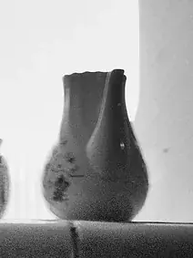
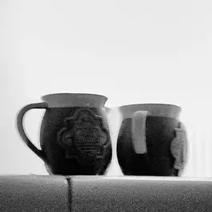

Cuerpo, asa y pico


Jarras y tazas
Capacidad real y un asa que nace del cuerpo
Dos tazas y tres jarras, todas torneadas y con el asa tirada a mano. La capacidad se mide con agua, dos veces: hasta el borde y hasta donde se llena de verdad.
Las fichas
Cuánto cabe, medido dos veces
Hasta el borde es lo que entra si llenas la pieza al ras con una jarra medidora. El punto cómodo es donde el líquido queda un dedo por debajo del borde, que es hasta donde se sirve sin derramar nada al andar con la taza en la mano. Es el número que conviene mirar.
| Pieza | Hasta el borde | Punto cómodo | Alto | Peso aprox. | Para qué |
|---|---|---|---|---|---|
| Taza de café | 180 ml | 140 ml | 7 cm | 220 g | Un café largo, o un cortado con sitio para la leche |
| Taza de desayuno | 380 ml | 300 ml | 9,5 cm | 340 g | Café con leche, té, un caldo |
| Jarra pequeña | 350 ml | 280 ml | 11 cm | 320 g | Leche, salsa o nata para la mesa |
| Jarra mediana | 900 ml | 750 ml | 17 cm | 700 g | Agua para dos, el zumo del desayuno |
| Jarra grande | 1,5 l | 1,25 l | 22 cm | 1.100 g | Agua para la mesa entera, limonada, horchata |
El peso es el de la pieza vacía y cocida. Una jarra grande llena pesa lo que pesa el agua más el gres, y el asa está pensada para ese peso, no para el de la jarra sola.
Cómo se hace
El asa se tira, no se tornea
El asa
Se coge un rollo de gres del grosor de un dedo, se moja la mano y se estira hacia abajo, una y otra vez, hasta que queda una tira con la sección que buscamos: más gruesa arriba, donde se une al cuerpo, y algo más fina abajo. Se deja orear hasta que aguanta su forma sin caerse, se curva y se pega a la taza cuando esta está en dureza de cuero, con barbotina y una presión del pulgar.
Por eso el asa nace del cuerpo sin escalón y la unión no se nota con el dedo. En la taza de desayuno caben dos dedos; en la de café, uno, y el resto de la mano la sujeta por el cuerpo. En las jarras el asa es más ancha, sube más alto y lleva un apoyo para el pulgar en la parte de arriba.
El peso en la mano
Una taza pesa lo que pesa su pared. Levantamos la pared fina en la parte de arriba, para que el borde sea agradable en el labio, y dejamos algo más de barro en el pie, para que la taza no vuelque con el asa puesta ni baile sobre la mesa. El borde va ligeramente vuelto hacia fuera: se bebe mejor y no gotea.
En la jarra grande, la muñeca no debe cargar el peso en el arranque del asa sino a lo largo de ella; por eso el asa se pega en dos puntos separados, arriba en el cuello y abajo en el hombro, y el pico se estira en el torno con el dedo, mientras el barro está blando, para que corte el chorro sin gotear.
Con el calor
Cómo se comporta el gres con el calor
El gres cocido a cono seis es denso y apenas tiene porosidad, y eso trae dos cosas. La primera: guarda el calor. Una taza calentada con agua caliente antes de servir mantiene el café templado más tiempo que una taza de pared fina. La segunda: se dilata y se contrae con la temperatura y no le gustan los cambios bruscos. Una jarra recién sacada de la nevera no debe recibir agua hirviendo, y una taza no va al horno.
El microondas sí: no hay metal en ninguno de los tres esmaltes. El asa se calienta menos que el cuerpo porque está más lejos del líquido, pero una taza de desayuno llena de caldo muy caliente quema por el cuerpo, y se coge por el asa.
Lo que no torneamos
- No hacemos teteras, cafeteras ni jarras con tapa: el cierre pide un ajuste que no está entre nuestras formas.
- No hacemos tazas con plato a juego. El plato de pan hace ese trabajo si lo quieres.
- No hacemos jarras aisladas ni con doble pared.
- No reparamos un asa que se ha roto: el asa pegada en cuero no admite una segunda unión.
Lo demás está en esmaltes y uso: lavavajillas, marcas de cubiertos y lo que no afirmamos.
La balda caliente
Doce tazas iguales, o una jarra suelta
Dinos la pieza, el esmalte y cuántas, y si la quieres con el asa a la derecha o a la izquierda: la pegamos según se pida.